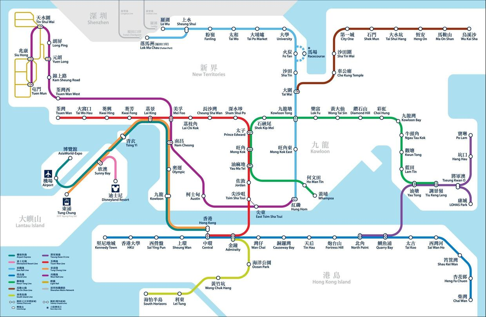

Interactive version: Open-Ended Problems, a condensed rewrite with figures you can drag and click. The whole series: Problem Solving and Design.

Keywords: open-ended problems | incomplete information | hidden premises | falsifiability
With the problem situation in place and a better grasp of what feasible solutions are, the next thing to think about is how to pan for gold: how to find feasible solutions in the possibility space. I say panning for gold because the possibility space can be huge, depending on how tightly the problem situation constrains it. Take this problem:
A1. Travelling only by MTR, find the shortest route from Central to Mong Kok in Hong Kong.
With the MTR route map, it isn't hard to find a feasible solution to A1 fairly quickly (here it is also the unique, optimal solution). But if we drop the MTR restriction and allow any way of getting there, we face a much bigger possibility space:
A2. Find the shortest route from Central to Mong Kok in Hong Kong, by any means.
Besides the MTR, buses, taxis, ferries, human power alone (walking plus swimming), planes and every kind of combination are all in the possibility space. Part of what makes a problem open-ended is a wide possibility space. Most of the problems we meet in real life have plenty of possibilities. Trickier still, "open-ended" has another side: the possibility space can change.
Problems are open-ended, at root, because information is incomplete. The incompleteness comes from two places: the problem itself and the person solving it.
A problem that isn't explicit enough leaves information incomplete. The route problems A1 and A2 above are both actually very vague, with many factors left unstated. Remember the two elements of a feasible solution we discussed earlier? Of resources and methods, A1 and A2 give only methods (ways of getting there) and say nothing about what resources are available, such as how much money we can spend. To be stricter: for methods such as swimming and walking, we haven't said "who" is going, or assessed how well this "who" swims or how fast. Even for flying, we'd need to pin down the model of plane, wouldn't we? Besides, a condition like "by any means" is extremely vague. Suppose one day we suddenly invent teleportation: should it be added to the ways of getting there? The whole possibility space naturally shifts as things happen outside it.
Even when a problem comes with quite complete information, the solver's own understanding of it may be limited and incomplete. As our understanding deepens, the problem situations of the problems and subproblems we extract from the original problem may change. The first part touched on this too.
How do we usually deal with all this incomplete information?
First, focus on what matters and set aside minor details.
Take A2. The most obvious feature for telling better possibilities from worse is of course the speed of each means of transport. Our estimates of those speeds come from a kind of prior knowledge we hold about the usual case, for example how fast planes and the MTR "usually" go. Working out exact speeds for a trip from Central to Mong Kok would be absurd (and more absurd still to go down to the model of plane). So we focus on what matters and set aside minor details: we don't need the specific (absolute) speeds, only the order of magnitude for each kind of transport. Apply this approach once more and we don't even need orders of magnitude; it's enough to know, relatively, whether a plane or the MTR is faster. By repeatedly focusing on the main issue and giving less weight to secondary factors, we shrink the possibility space quickly. If you ask why it can shrink, and what exactly we rely on to shrink it, the answer is this prior knowledge about speed in our heads.
Many problems with incomplete information depend on the assumption that the person posing the problem and the solver share the same prior knowledge. Put differently, they use hidden conditions. Used well, this shared understanding saves a great deal of communication; used badly, it can be disastrous, because much of what we see as shared understanding isn't actually shared.
This habit of leaving conditions hidden when stating something connects to an important idea in the philosophy of science: Popper's principle of falsifiability. Popper used falsifiability to separate scientific from non-scientific theories. His way of drawing the line is black and white, but reality is far from that absolute. An answer on Zhihu (in Chinese) explains very well why this way of drawing the line is flawed. Let's look at the problem raised in its section 2.1. As I understand it, what the holists are saying is that the conditional statements falsification deals with have very complex conditions, which may contain many sub-conditions. Often when we see a conditional p -> q, its fuller form is actually (p ^ a1 ^ a2 ^ ...) -> q, where a1 and a2 are hidden premises. So from ~q we cannot conclude ~p, only ~(p ^ a1 ^ a2 ^ ...). In other words, not-q does not falsify p; it can only falsify the well-formed whole (p ^ a1 ^ a2 ^ ...), all the conditions taken together.
Ideally, when we form a theory, we are able to, and must, make all its premises explicit. So I think the problem raised in section 2.1 of that answer is only a result of the theory being stated incompletely. Even when there is a hidden condition nobody had considered beforehand, like Neptune, that is not a flaw in falsifiability itself (though if all we can falsify is a theory as a whole, falsification seems to mean much less for the progress of science). Going a step further, perhaps scientific theories also need to make sure, as far as they can, that the problems they deal with are not open-ended. The more mature a theory, the more of its constraints have been made explicit.
Second, ask questions about the problem itself.
This helps the solver understand the problem more deeply, rebuild the problem situation and divide it into subproblems. While exploring an open-ended problem, you can also ask questions outside the problem (of whoever posed it, for instance) to add explicit constraints and complete the problem, making a vague problem more explicit and more focused. Always start from the information you have now, and adjust how you model the problem as new information comes in while you solve it.
You can see from this that posing a problem and solving it are not always a one-way flow. They can also be a control loop of feedback and iteration. This could be taken further into black-box epistemology, which I'll go into in a later post.
Somewhere along the way this part seems to have lost its direct link to design, hahaha (hmm, maybe I could stretch it to the shared understanding users and designers have of design elements?).